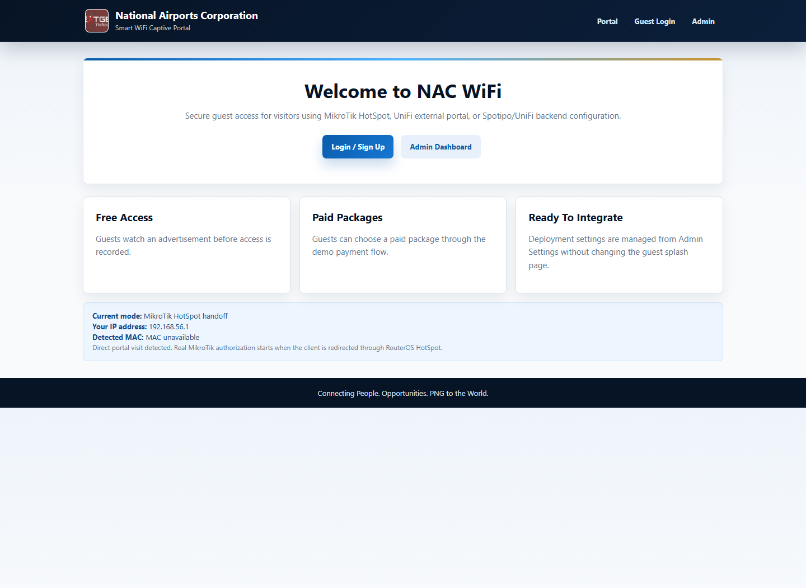
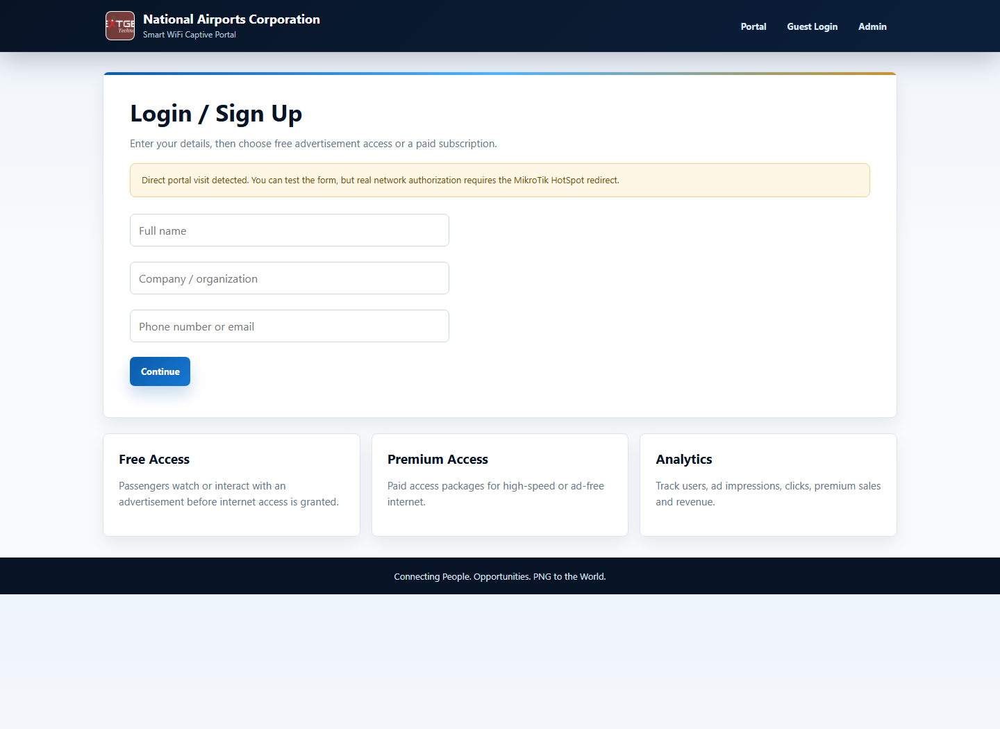
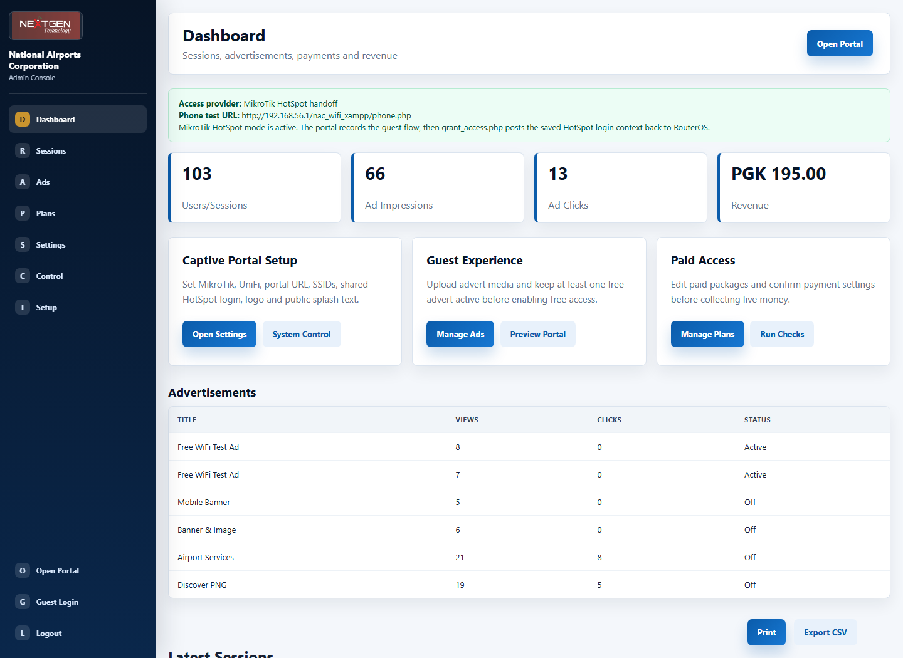
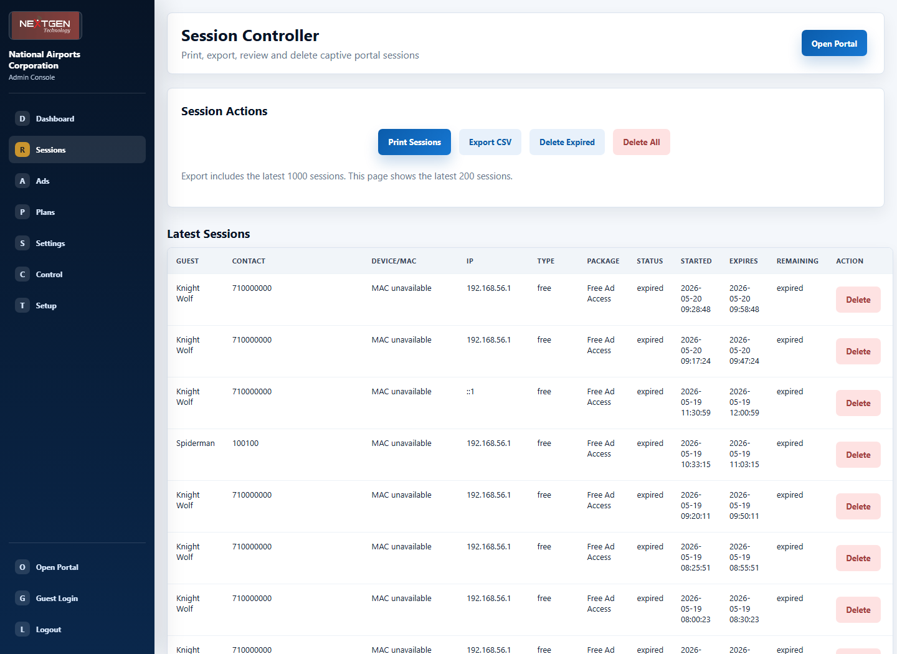
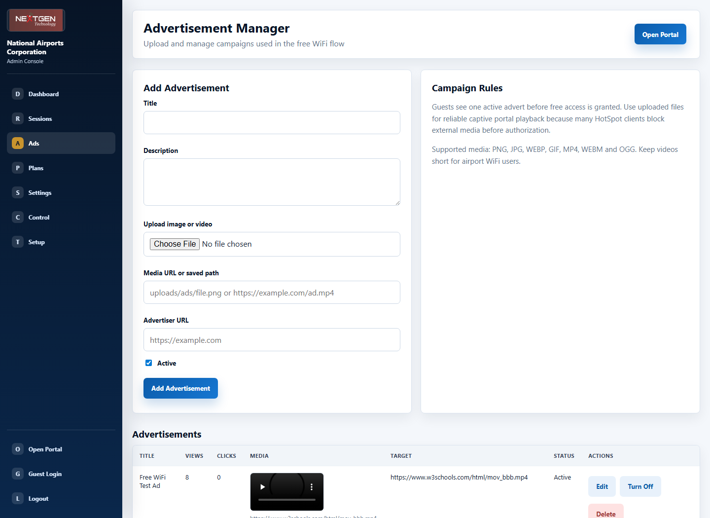
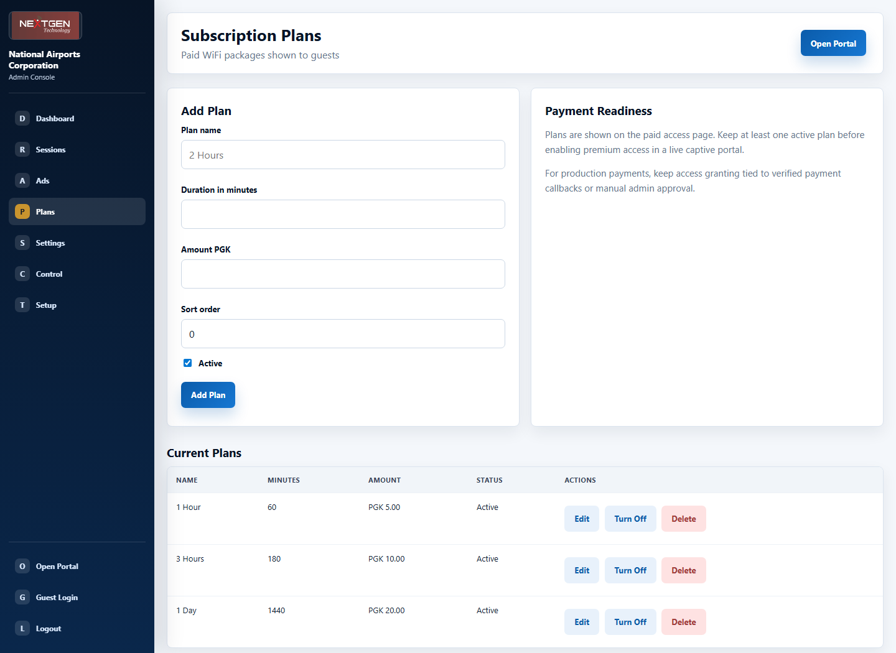
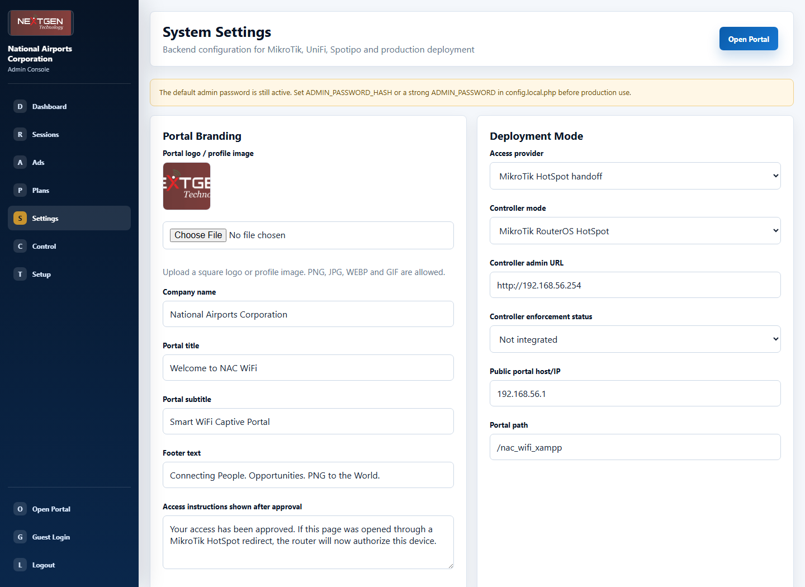
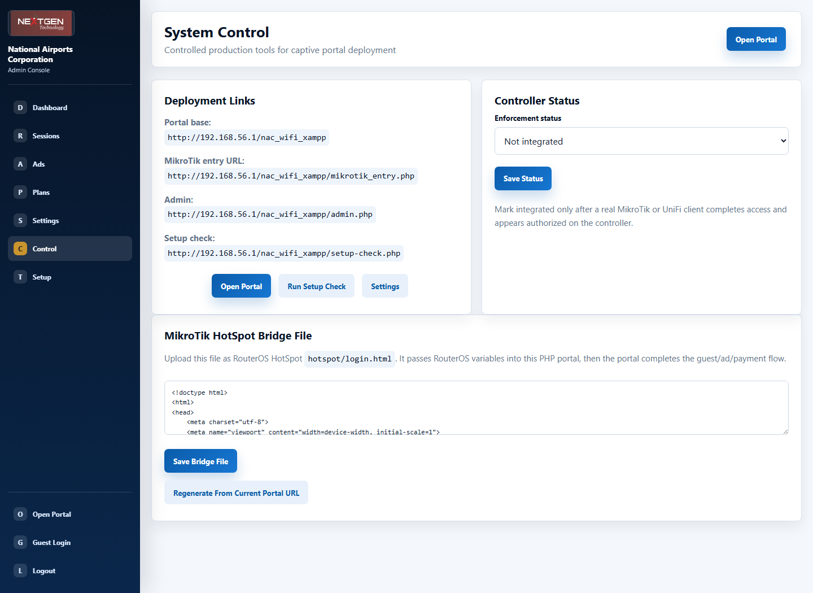
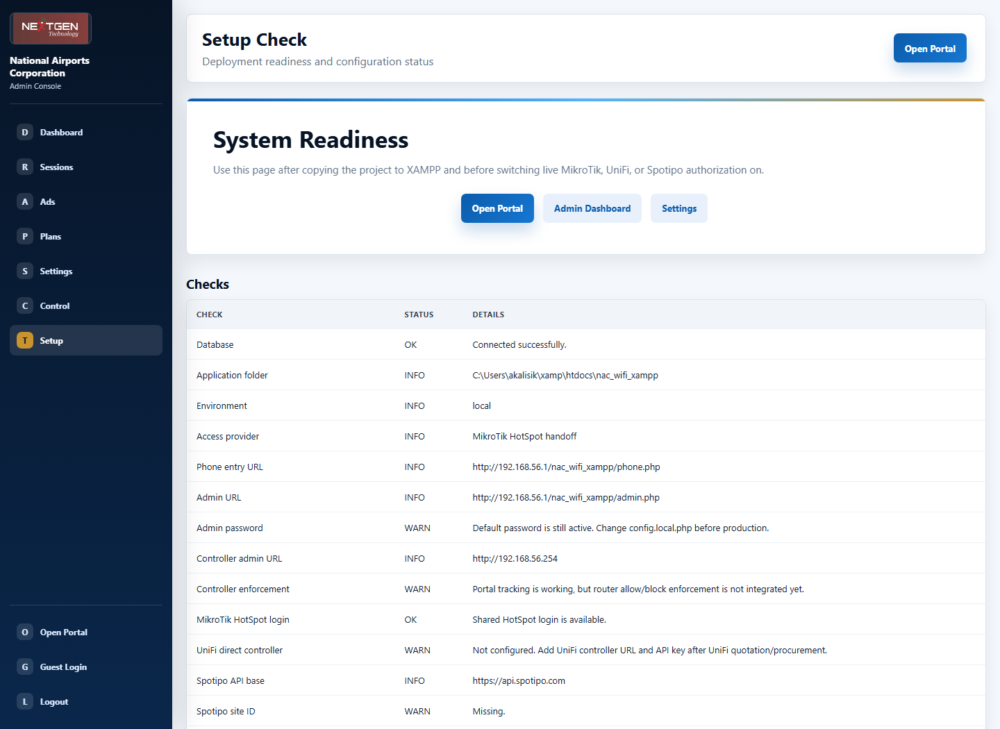

Production readiness, administrator guide, and hardware integration plan for MikroTik or UniFi access points.
The NAC WiFi Captive Portal is a guest WiFi access system for visitors, passengers, staff guests, and other approved users. It provides a branded splash page, guest login, free advertisement-supported access, paid access packages, live session tracking, advertisement management, subscription plans, and controller settings for real captive portal deployment.
The system is designed so that when MikroTik or UniFi access point hardware arrives, the administrator can configure the portal URL, controller settings, SSIDs, access time, and HotSpot bridge file from the Admin Console. The goal is to make deployment practical without rewriting code.
The portal exists to control and record WiFi access. It is not just a web page. It works together with network hardware such as MikroTik RouterOS HotSpot or UniFi external portal features. The hardware blocks users before login. The portal collects the user details and chooses whether the user should receive free or paid access.
| Area | Purpose |
|---|---|
| Open Portal | Public splash page for users who connect to the WiFi network. |
| Guest Login | Collects name, organization, phone or email before access is granted. |
| Free Access | Shows an active advertisement first, then creates an access grant. |
| Paid Access | Shows paid packages, records the payment path, and creates premium access after approval. |
| Admin Console | Lets staff manage sessions, ads, plans, settings, logo, and controller readiness. |
| Controller Integration | Connects the business flow to MikroTik or UniFi so the user actually receives internet access. |

Open Portal This is the first page a user sees. It explains that the WiFi portal supports MikroTik HotSpot, UniFi external portal, and backend settings. It includes the login/sign up action and a link for administrator access.
Guest Login The guest form collects basic visitor information. This is important for accountability, usage reports, audit logs, and future customer service follow up.
| Field | Why It Matters |
|---|---|
| Full name | Identifies the user or visitor. |
| Organization | Optional field for company, agency, airline, contractor, or visitor group. |
| Phone or email | Contact reference for audit, support, and business reporting. |
| Device/MAC and IP | Used to match the portal record to the device on the network when the controller provides it. |

The Dashboard is the main management screen. It summarizes users/sessions, advert impressions, advert clicks, and revenue. It also includes direct buttons for common tasks such as Settings, System Control, Ads, Plans, Portal Preview, and Setup Check.
The latest sessions table shows recent usage and updates live. It is useful for the airport operations team to see whether users are connecting and whether access is active or expired.

| Control | Use |
|---|---|
| Prints the current session view for management or manual filing. | |
| Export CSV | Downloads session records for Excel or reporting. |
| Manage Sessions | Opens the Sessions Controller where sessions can be reviewed and deleted. |
The Sessions Controller is the management page for internet access records. It is intentionally separate from the live dashboard so that delete actions are controlled and confirmed.

| Action | Explanation |
|---|---|
| Print Sessions | Prints a clean report view without the sidebar and buttons. |
| Export CSV | Exports the latest 1000 sessions for spreadsheet reporting. |
| Delete Expired | Removes old expired sessions and related access/payment records. |
| Delete All | Clears all session history. This should only be used after backup or during a reset. |
| Delete One | Removes one incorrect or test session. |
Free access is controlled through active advertisements. When the user chooses free access, the system selects one active advertisement and shows it for a short countdown. After the countdown, the system records the advert view and grants free access for the configured time.

For production captive portal use, uploaded local media is recommended because unauthenticated WiFi clients may not be allowed to load external images or videos before internet access is granted.
Plans define paid WiFi packages such as 1 Hour, 3 Hours, or 1 Day. Each plan has a duration, price, active/off status, and sort order. The user sees only active plans on the paid access page.

The Settings page is the main configuration center. It is designed so an administrator can update portal branding, logo/profile image, admin username/password, deployment mode, controller address, public portal URL, SSIDs, MikroTik credentials, UniFi details, Spotipo details, and access instructions.

| Setting Area | What To Configure |
|---|---|
| Portal Branding | Company name, title, subtitle, footer text, and logo/profile image. |
| Admin Account | Admin username and secure password. The password is stored as a hash. |
| Deployment Mode | Select MikroTik HotSpot, UniFi external portal, Spotipo/UniFi API, or local demo. |
| Public Portal Host/IP | The IP or hostname that WiFi users can reach, for example 192.168.56.1. |
| Portal Path | The folder path, normally /nac_wifi_xampp. |
| MikroTik HotSpot | Shared HotSpot username/password used for final RouterOS login handoff. |
| UniFi / Spotipo | Controller URL, API key, site ID, API base URL, and guest access durations. |
System Control gives administrators the deployment links and the controlled HotSpot bridge file editor. This is not a general PHP file editor. It is intentionally limited to the network bridge file needed for MikroTik HotSpot deployment.

| Control | Use |
|---|---|
| Portal Base URL | The address used by APs/controllers to send users to the portal. |
| MikroTik Entry URL | The URL used by RouterOS HotSpot login.html to pass HotSpot variables to PHP. |
| Enforcement Status | Internal readiness flag showing whether router/controller enforcement has been proven. |
| Regenerate Bridge File | Builds hotspot/login.html using the current portal URL. |
MikroTik RouterOS HotSpot is the current recommended direct integration path. RouterOS controls internet access. The PHP portal handles branding, guest registration, ads, payment flow, and session records.
hotspot/login.html uploaded to RouterOS HotSpot files.MikroTik HotSpot handoff.hotspot/login.html to the MikroTik HotSpot file area.http://neverssl.com.UniFi integration depends on the UniFi Network version, gateway/AP model, and available external portal/API method. The system is ready to hold UniFi controller settings and route the guest flow through the portal. Final authorization must be connected to the confirmed UniFi method when hardware arrives.
The Setup Check page verifies the database, required files, controller values, payment status, API readiness, and required tables. It is used before live testing and after any deployment move.

| Production Requirement | Action |
|---|---|
| Admin password | Change default admin password from Settings before production. |
| Portal URL | Set host/IP and path that clients can reach from guest WiFi. |
| Controller mode | Select MikroTik HotSpot or UniFi integration mode. |
| Advert media | Upload at least one active local advert for free access. |
| Plans | Create at least one active paid package if paid access is offered. |
| Payment | Use verified payment callback or manual approval process for live money. |
| Test client | Test from a real WiFi client behind the AP/router, not only from the server browser. |
| Controller proof | Confirm the client appears as authorized on MikroTik or UniFi. |
Free access is used when NAC or a sponsor wants to provide limited WiFi in exchange for advert exposure. The user must watch or interact with an advert before access is granted. The system records advert views and clicks.
Paid access is used when users need longer or premium connectivity. The administrator controls the plan name, price, and duration. Payments should be verified before final access is granted.
During office testing, the system can record sessions without final router enforcement. This is useful for checking screens and reports, but production access must be tested through MikroTik or UniFi.
| Role | Responsibility |
|---|---|
| Managing Director / Management | Review service model, approve deployment, monitor reports and revenue/ad performance. |
| IT Administrator | Configure MikroTik/UniFi, portal settings, passwords, HotSpot bridge file, backups, and security. |
| Marketing / Commercial Team | Upload adverts, activate campaigns, monitor views and clicks. |
| Finance / Revenue Team | Review paid package records, payment process, and exported CSV reports. |
| Support Staff | Assist guests and check whether sessions are active or expired. |
The system is ready as a captive portal application layer and administrator console. The remaining production proof depends on the arrival and configuration of MikroTik or UniFi hardware. Once the AP/router is installed, the most important test is a real client test from the guest WiFi network.
This portal gives NAC a controlled, branded, reportable WiFi access system. It supports free sponsored advertising access, paid package access, administrator reporting, and a path to MikroTik or UniFi captive portal enforcement. The system is structured so non-technical staff can manage day-to-day content while IT controls the router/controller integration.